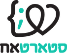

<mat-sidenav-container class="example-container">
  <mat-sidenav #sidenav mode="side" >

    <span class="">
      <button mat-button (click)="logout()"> <mat-icon>logout</mat-icon> Logout</button>
    </span>
  </mat-sidenav>
  <mat-sidenav-content>
    <mat-toolbar>
      <div class="col-md-0">
        
        <button mat-button (click)="sidenav.toggle()"><mat-icon>menu</mat-icon></button>
        <a>שלום </a><a>{{user.FirstName}}</a>
      </div>
      <div class="offset-md-5 col-md-1">
        <strong>ידידים | סטארטאח</strong>
      </div>
      <div class="offset-md-4 col-md-1 ">
        
      </div>
    </mat-toolbar>
    <span>
    </span>
    <router-outlet></router-outlet>

  </mat-sidenav-content>
</mat-sidenav-container>